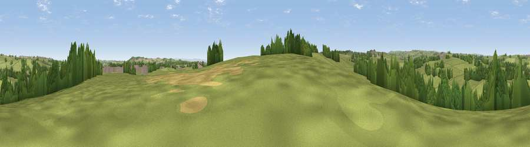

Viewpoint near Evenwood
#37193 in England · top 87% of its area beats it · near EvenwoodThe view, rendered

A 360° render of this exact spot computed from the terrain model, tree cover and land cover — summer colours, afternoon light, calibrated against photographs of famous viewpoints. Real trees, hedges and buildings will differ in detail.
The panorama
Grey silhouette: terrain skyline in each direction (720 bearings, Earth curvature and refraction included). Dashed green: skyline with trees (+15 m) and buildings (+8 m) as obstacles. Blue strip: how far the ground is visible on each bearing.
Where the view opens
Wedge length = distance to the farthest visible ground on that bearing (vegetation-aware). Rings at 10, 25 and 50 km.
What fills the view
78% grassland · 14% woodland · 5% cropland · 3% built-up
Angular shares of the visible panorama (visual magnitude), not map area. Landscape diversity 0.31 (0–1 Shannon).
Key numbers
More beautiful places nearby
The staircase of upgrades: each row has a higher view potential than everything closer. Driving times are estimates from straight-line distance, calibrated against real road routing — check an actual route before setting out.
| Place | Direction | Drive | Score |
|---|---|---|---|
| Viewpoint near Ramshaw | NNE · 2 km | ~5 min | 46.0 |
| Viewpoint near Cockfield | SW · 3 km | ~7 min | 54.8 |
| Viewpoint near Toft Hill | N · 3 km | ~7 min | 57.9 |
| Viewpoint near St Helen Auckland | E · 5 km | ~12 min | 70.3 |
| Viewpoint near Eggleston | W · 13 km | ~24 min | 76.0 |
| Pontop Pike | N · 28 km | ~44 min | 77.8 |
| Viewpoint near Ingleby Cross | SE · 40 km | ~60 min | 82.4 |
| Beacon Hill | SE · 40 km | ~60 min | 84.7 |
54.62016, -1.77580 · source: screening · position refined by local search. Computed location — check access rights before visiting.